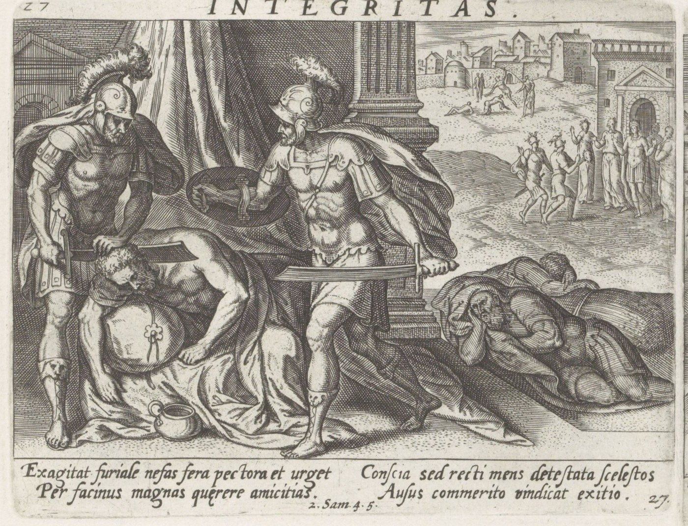

2 Samuel 4 — La Traducción Mister

2 Samuel 4:5–7. Recab y Baana llegan hacia el calor del día a la casa de Is-boset, entran como quienes vienen a buscar trigo, lo hieren en el vientre mientras yace sobre su cama en su alcoba, y le quitan la cabeza. Este panel es de la misma serie latina sobre la vida de David que el grabado de 2 Samuel 3, y lleva la referencia al versículo 5 bajo la imagen. Muestra el asesinato como un ataque abierto con espadas; el hebreo hace entrar a los hermanos con un pretexto, y el griego tiene una portera dormida, y el grabado no sigue ninguno de los dos.

Notas del traductor — versículo por versículo
Manos flojas. «Y el hijo de Saúl oyó que Abner había muerto en Hebrón, y se le aflojaron las manos; y todo Israel quedó aterrado»: «y se le aflojaron las manos» está en un versículo de la Biblia hebrea, este. Es lo contrario de lo que David dijo a Jabes, «sean fuertes sus manos» (2 Samuel 2:7, ya en estas páginas; véanse jazaq y rafá), y del fortalecimiento del propio Abner en 3:6 (ya en estas páginas). El hebreo lo llama solo «el hijo de Saúl» aquí y en el versículo 2, y lo nombra Is-boset en el versículo 5. «Aterrado» es nivhalú, la palabra de Saúl antes de Gilboa, «muy aterrado» (1 Samuel 28:21, ya en estas páginas). El griego lo llama Memphibosthe. La RV60 tiene «las manos se le debilitaron, y fue atemorizado todo Israel»; la NVI «se acobardó y con él todo Israel»; la TNM 1987 «se le debilitaron las manos, y todos los israelitas mismos se perturbaron»; la Douay inglesa «his hands were weakened, and all Israel was troubled».
Dos jefes de bandas de incursores. «Y el hijo de Saúl tenía dos hombres, jefes de bandas de incursores; el nombre del uno era Baana, y el nombre del otro Recab, hijos de Rimón el beerotita, de los hijos de Benjamín»: guedudim, las bandas de incursores de la persecución de David en Siclag (1 Samuel 30:8, ya en estas páginas); estos hombres dirigen las de Is-boset. «Hijos de Rimón» está en tres versículos de la Biblia hebrea, todos en este capítulo, los versículos 2, 5 y 9. El hebreo explica, «porque Beerot también se cuenta a Benjamín»: Beerot era una de las cuatro ciudades de los gabaonitas (Josué 9:17) y está en la lista de Benjamín (Josué 18:25, ambos ya en estas páginas). La RV60 tiene «capitanes de bandas de merodeadores»; la NVI «dos sujetos que lideraban bandas armadas»; la TNM 1987 «jefes de las partidas merodeadoras»; la Douay inglesa «captains of his bands».
Gitaim. «Y los beerotitas huyeron a Gitaim, y han sido forasteros allí hasta hoy»: «a Gitaim» está en un versículo de la Biblia hebrea. El hebreo no da razón de la huida, y «hasta hoy» es del narrador, que escribe desde un tiempo posterior. La muerte de gabaonitas a manos de Saúl en su celo por Israel se cuenta en 2 Samuel 21:1–2; el texto de aquí no une las dos cosas. El griego tiene «Guetaim». La RV60 tiene «los beerotitas habían huido a Gitaim, y moran allí como forasteros hasta hoy»; la NVI «donde hasta la fecha residen»; la TNM 1987 «llegaron a ser residentes forasteros allí hasta el día de hoy»; la Douay inglesa «were sojourners there until that time».
El hijo cojo. «Y Jonatán hijo de Saúl tenía un hijo, lisiado de los pies. Tenía cinco años cuando llegó de Jezreel el informe de Saúl y Jonatán; y su nodriza lo tomó y huyó; y sucedió que, mientras ella se apresuraba a huir, él cayó y quedó cojo; y su nombre era Mefi-boset»: el versículo está aparte, entre la muerte del apoyo de Is-boset y la muerte del propio Is-boset, y cuenta lo que queda de la línea de Saúl en el único niño que no es hijo de rey sino nieto de rey. «Lisiado de los pies» está en dos versículos de la Biblia hebrea, este y el versículo donde Siba dice a David «Jonatán tiene todavía un hijo, lisiado de los pies» (2 Samuel 9:3, ya en estas páginas). Su edad se da en el momento de Gilboa, cuando el informe llegó «de Jezreel» (1 Samuel 31:7, ya en estas páginas). «Su nodriza» es omantó, la raíz de Noemí, que «fue su nodriza» (Rut 4:16, ya en estas páginas). El nombre Mefi-boset es la forma de los libros de Samuel del Merib-baal de Crónicas (1 Crónicas 8:34), puesto junto a Is-boset y Esbaal en la nota de Romanos 11 (ya en estas páginas). El griego lo llama Memphibosthe, la forma que da también a Is-boset en los versículos 1 y 2. La RV60 tiene «tenía un hijo lisiado de los pies»; la NVI «que estaba tullido»; la TNM 1987 «tenía un hijo lisiado de los pies»; la Douay inglesa «a son that was lame of his feet».
El calor del día. «Y los hijos de Rimón el beerotita, Recab y Baana, fueron, y llegaron hacia el calor del día a la casa de Is-boset; y él estaba acostado para el descanso del mediodía»: «hacia el calor del día» está en dos versículos de la Biblia hebrea, este y Abraham a la puerta de su tienda (Génesis 18:1, ya en estas páginas); la primera victoria de Saúl había durado «hasta que calentó el día» (1 Samuel 11:11, ya en estas páginas). «El descanso del mediodía» está en un versículo. La RV60 tiene «en el mayor calor del día en casa de Is-boset, el cual estaba durmiendo la siesta en su cámara»; la NVI «en pleno calor del día, cuando él dormía la siesta»; la TNM 1987 «al tiempo que él estaba durmiendo su siesta del mediodía».
Como quienes vienen a buscar trigo. «Y entraron hasta el medio de la casa, como quienes vienen a buscar trigo; y lo hirieron en el vientre; y Recab y Baana su hermano escaparon»: «quienes vienen a buscar trigo» está en un versículo. El griego no tiene tal pretexto: tiene a una mujer en la puerta, «la portera de la casa limpiaba trigo, y se adormeció y se durmió», y los hermanos «pasaron inadvertidos»; la RV60 sigue al griego, «la portera de la casa había estado limpiando trigo, pero se durmió». «En el vientre» es ha-jómesh, el tercero de los cuatro versículos de 2 Samuel que tienen el sustantivo, después del golpe de Abner a Asael y del de Joab a Abner (2:23, 3:27, ya en estas páginas) y antes del de Joab a Amasa (20:10); véase jómesh. La NVI tiene «Con el pretexto de sacar un poco de trigo, Recab y su hermano Baná entraron al interior de la casa y allí mismo lo apuñalaron en el vientre»; la TNM 1987 «como hombres que venían a buscar trigo, y luego lo hirieron en el abdomen»; la Douay inglesa «stabbed him in the groin».
La cabeza. «Y entraron en la casa, mientras él yacía sobre su cama en su alcoba, y lo hirieron, y le dieron muerte, y le quitaron la cabeza; y tomaron su cabeza y anduvieron por el camino del Arabá toda la noche»: «en su alcoba» está en un versículo, y «y le quitaron la cabeza» está en un versículo; los filisteos en Gilboa «cortaron» la cabeza de Saúl con otro verbo (1 Samuel 31:9, ya en estas páginas). El Arabá y «toda la noche» son el camino y el tiempo de la huida de Abner desde Gabaón (2 Samuel 2:29, ya en estas páginas). El griego tiene «el camino hacia el occidente». La RV60 tiene «caminaron toda la noche por el camino del Arabá»; la NVI «Caminaron toda la noche por el Arabá»; la TNM 1987 «anduvieron por el camino del Arabá toda la noche»; la Douay inglesa «taking away his head they went off by the way of the wilderness».
Venganza. «Y trajeron la cabeza de Is-boset a David en Hebrón, y dijeron al rey: “Mira, la cabeza de Is-boset hijo de Saúl, tu enemigo, que buscaba tu alma. Y Jehová ha dado hoy a mi señor el rey venganza de Saúl y de su descendencia”»: «que buscaba tu alma» es la palabra de Abiatar para Saúl (1 Samuel 22:23) y la de Abigail (25:29, ambos ya en estas páginas), dicha aquí de un hombre al que los capítulos anteriores no muestran buscando la vida de David. Neqamot es plural, «venganzas», y está en cinco versículos de la Biblia hebrea, entre ellos la hija de Jefté, «Jehová te ha vengado de tus enemigos» (Jueces 11:36, ya en estas páginas), y otros tres (Ezequiel 25:17; Salmo 18:48; 94:1). David llevó una vez una cabeza a Jerusalén (1 Samuel 17:54, ya en estas páginas); ahora se le trae una a él. La RV60 tiene «Jehová ha vengado hoy a mi señor el rey, de Saúl y de su linaje»; la NVI «El Señor ha vengado hoy a mi señor el rey»; la TNM 1987 «Jehová da a mi señor el rey desquite el día de hoy contra Saúl y su prole»; la Douay inglesa «the Lord hath revenged my lord the king this day of Saul, and of his seed».
Redimido de toda angustia. «Y David respondió a Recab y a Baana su hermano, hijos de Rimón el beerotita, y les dijo: “Vive Jehová, que ha redimido mi alma de toda angustia”»: «que ha redimido mi alma de toda angustia» está en dos versículos de la Biblia hebrea, este juramento y el de David en su vejez, «de toda angustia» (1 Reyes 1:29, ya en estas páginas). Es la oración de la perdonada vida de Saúl, «y me libre de toda angustia» (1 Samuel 26:24, ya en estas páginas), vuelta acción de gracias; padá es el verbo de comprar de vuelta. La RV60 tiene «Vive Jehová que ha redimido mi alma de toda angustia»; la NVI «El Señor me ha librado de todas mis angustias»; la TNM 1987 «que ha redimido mi alma de toda angustia»; la Douay inglesa «who hath delivered my soul out of all distress».
Un portador de buenas noticias. «Cuando uno me avisó diciendo: “Mira, Saúl ha muerto”, y él era a sus propios ojos como un portador de buenas noticias, yo le eché mano y lo maté en Siclag — a quien yo debía haber dado un pago por su noticia»: «como un portador de buenas noticias a sus propios ojos» está en un versículo de la Biblia hebrea; la raíz es la de mevasér (1 Samuel 31:9, ya en estas páginas) y la del amalecita a quien David hizo matar (2 Samuel 1:15, ya en estas páginas; su relato está en 1:10). La última cláusula es ambigua, y las versiones se dividen: la RV60 tiene «le maté en Siclag en pago de la nueva»; la NVI «la recompensa que le di por tan “buenas noticias” fue apresarlo y matarlo en Siclag»; la TNM 1987 «cuando [de parte mía] era debido darle albricias de mensajero»; la Douay inglesa «who should have been rewarded for his news». El griego tiene «a quien yo debía dar regalos de buena noticia».
Quemarlos de la tierra. «¡Cuánto más cuando hombres malos han matado a un hombre justo en su propia casa, sobre su cama! ¿No he de requerir ahora su sangre de la mano de ustedes, y quemarlos de la tierra?»: «hombres malos» en esta forma está en un versículo. El «hombre justo» es Is-boset, y la palabra fue de Saúl a David, «Tú eres más justo que yo» (1 Samuel 24:17, ya en estas páginas). «Requerir su sangre de la mano de ustedes» es el «de mi mano lo reclamarás» de Judá (Génesis 43:9, ya en estas páginas). «Quemar» es bi’er, el verbo del «así quemarás el mal de en medio de ti» de la ley (Deuteronomio 17:7, ya en estas páginas), dicho aquí en primera persona. La RV60 tiene «¿no he de demandar yo su sangre de vuestras manos, y quitaros de la tierra?»; la NVI «exterminándolos a ustedes de la tierra»; la TNM 1987 «no tengo yo que eliminarlos de la tierra»; la Douay inglesa «take you away from the earth».
Manos y pies. «Y David ordenó a los jóvenes, y los mataron, y les cortaron las manos y los pies, y los colgaron junto al estanque en Hebrón; y la cabeza de Is-boset la tomaron, y la sepultaron en el sepulcro de Abner en Hebrón»: «y cortaron» (vayeqatsetsú) está en dos versículos de la Biblia hebrea, este y los pulgares y dedos gordos de Adoni-bezek (Jueces 1:6, ya en estas páginas; véase la nota de Deuteronomio 25:11–12). Los cuerpos se cuelgan «junto al estanque»; los cinco reyes de Josué colgaron «hasta la tarde» (Josué 10:26), y la ley decía que un colgado «no pasará la noche en el árbol» (Deuteronomio 21:23, todos ya en estas páginas); el hebreo no dice cuándo se los bajó. La cabeza va al sepulcro del hombre que hizo rey a Is-boset (2 Samuel 3:32, ya en estas páginas). El griego tiene «la fuente en Hebrón». La RV60 tiene «los colgaron sobre el estanque en Hebrón»; la NVI «colgaran sus cuerpos junto al estanque de Hebrón»; la TNM 1987 «los colgaron junto al estanque de Hebrón»; la Douay inglesa «hanged them up over the pool in Hebron».
Patrones que vale la pena llevar adelante
Donde esta traducción mantiene las palabras exactas y distintas: «se le aflojaron las manos» para rafá, frente a «sean fuertes sus manos» en 2 Samuel 2:7; «aterrado» para nivhal, como en 1 Samuel 28:21; «jefes de bandas de incursores» para guedudim; «forasteros»; «lisiado de los pies» para nekhé raglayim; «nodriza», como en Rut 4:16; «el calor del día», como en Génesis 18:1; «el vientre» para jómesh, como en 2:23 y 3:27; «le quitaron la cabeza»; «toda la noche», como en 2:29; «buscaba tu alma», como en 1 Samuel 22:23; «venganza»; «redimido mi alma de toda angustia», como en 1 Reyes 1:29; «un portador de buenas noticias»; «requerir su sangre de la mano», como en Génesis 43:9; «quemarlos», como en Deuteronomio 17:7; «cortaron», como en Jueces 1:6; «colgaron»; e «Is-boset» y «Hebrón» en las formas del capítulo anterior.
Ecos pagados. «Sean fuertes sus manos» y Abner fortaleciéndose (2 Samuel 2:7; 3:6); el terror de Saúl (1 Samuel 28:21); las bandas de incursores de David (1 Samuel 30:8); Beerot entre las ciudades gabaonitas y en Benjamín (Josué 9:17; 18:25); el informe de Jezreel (1 Samuel 31:7); Noemí la nodriza (Rut 4:16); Merib-baal, Esbaal e Is-boset (Romanos 11); el mediodía de Abraham y la victoria de Saúl al calor del día (Génesis 18:1; 1 Samuel 11:11); los vientres de Asael y de Abner (2 Samuel 2:23; 3:27); la cabeza de Saúl (1 Samuel 31:9); la noche de Abner en el Arabá (2 Samuel 2:29); el «busca tu alma» de Abiatar y de Abigail (1 Samuel 22:23; 25:29); la venganza de Jefté (Jueces 11:36); la cabeza de Goliat (1 Samuel 17:54); el juramento en su segundo lugar (1 Reyes 1:29) y su oración (1 Samuel 26:24); el portador de noticias y el amalecita (1 Samuel 31:9; 2 Samuel 1:10, 15); el hombre justo (1 Samuel 24:17); la fianza de Judá (Génesis 43:9); el quemar el mal (Deuteronomio 17:7); los pulgares de Adoni-bezek (Jueces 1:6); los reyes colgados y la ley del árbol (Josué 10:26; Deuteronomio 21:23); y el sepulcro de Abner (2 Samuel 3:32).
Ecos sembrados. La muerte de los gabaonitas a manos de Saúl (2 Samuel 21:1–2); el «lisiado de los pies» de Siba y la bondad de David con Mefi-boset (2 Samuel 9:1–13, ya en estas páginas); Mefi-boset con Siba y en la rebelión de Absalón (2 Samuel 16:1–4; 19:24–30); la cabeza de Seba arrojada a Joab (2 Samuel 20:22) y Amasa en el vientre (2 Samuel 20:10); el cuerpo de Saúl colgado por los filisteos (2 Samuel 21:12); la venida de las tribus a David en Hebrón (2 Samuel 5:1–3, ya en estas páginas); y el Merib-baal del cronista (1 Crónicas 8:34). Ninguno de los demás está todavía en estas páginas.
Próxima entrega de este libro: 2 Samuel 5 — todas las tribus de Israel vienen a David en Hebrón y lo ungen rey sobre Israel; toma Jerusalén a los jebuseos y edifica allí, Hiram de Tiro envía cedro, y derrota dos veces a los filisteos en el valle de Refaim.